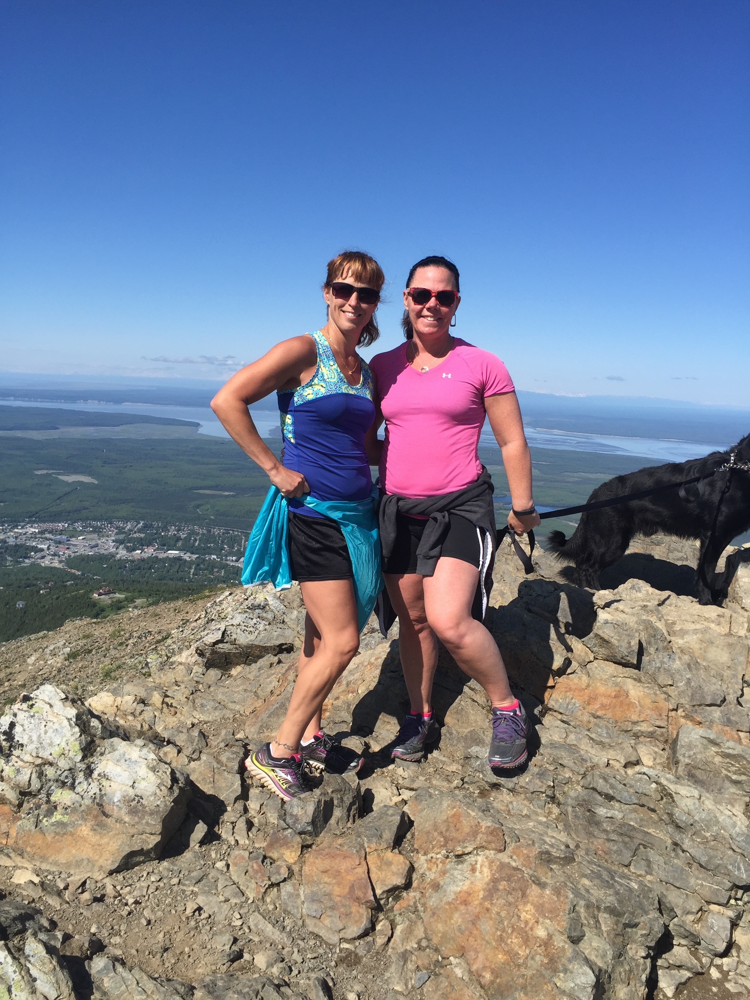
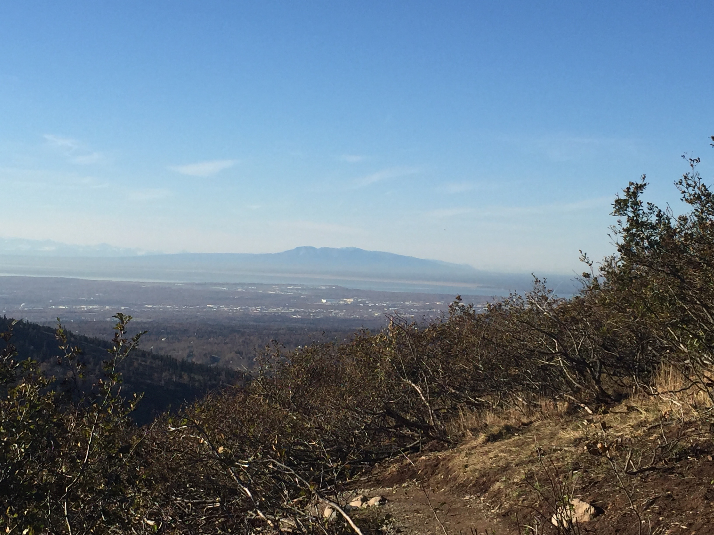

| Mt.Baldy |
1.5 miles one way |
Moderate, slightly steep at the top |
 |
There are great views of the Eagle River valley from the top. In the fall there is some great blueberry picking. |
| Flattop |
1.5 miles one way |
FRONT- Moderate, steep at the top BACK - moderate, switchbacks |
 |
One of the most popular hikes in Anchorage. You can climb the front and back sides. The back side is a little longer, but and easier hike. The front side has a lot of stairs and has some rock climbing at the top. |
| O'Malley Peak |
7.7 round trip |
moderate to challenging at the end |
 |
This hike is a challenge. You start with a somewhat steep climb to the Ballfield. But then a steep, rocky climb to the peak. |
| The Dome |
5 miles each way |
moderate to challenging |
 |
A winding trail through the woods that opens to on open climb to the peak. |